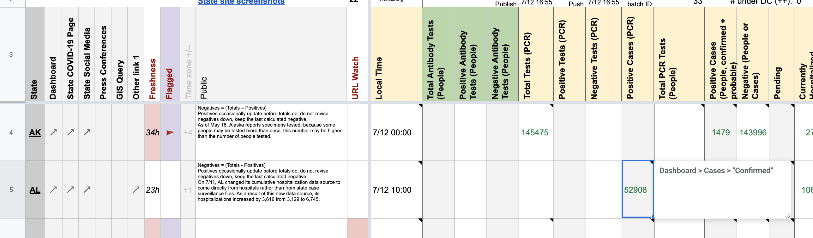
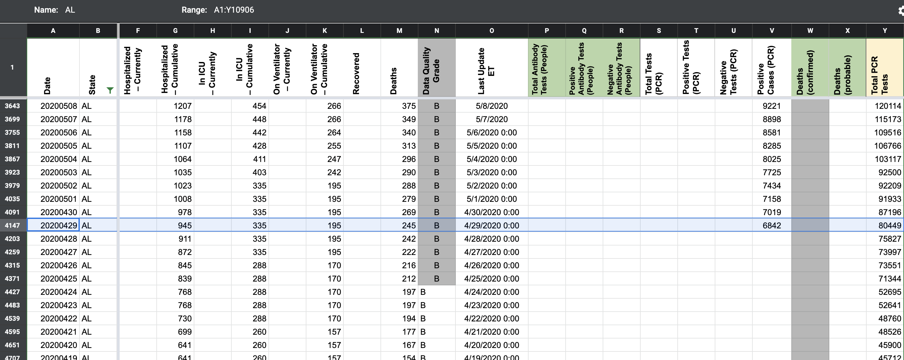
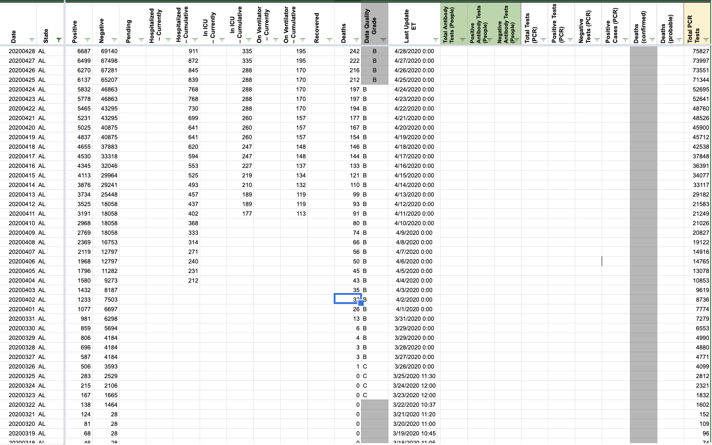
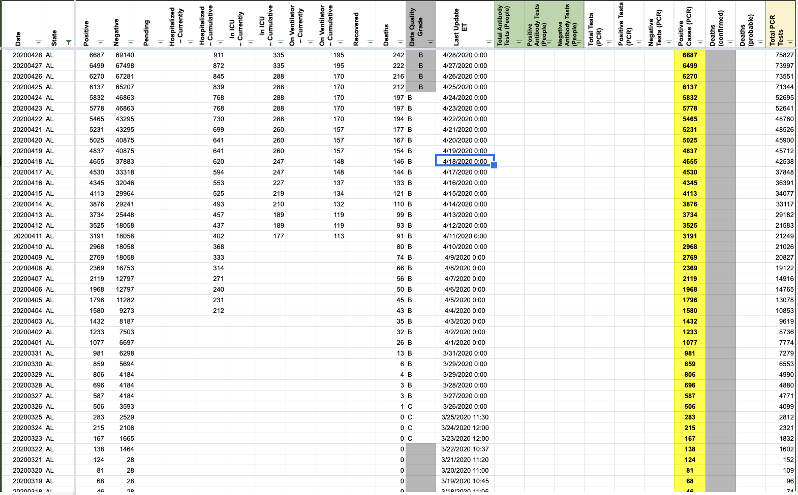

[AL] PCL Cases Historicals
Issue number 610
pscsharon opened this issue on July 13, 2020 at 6:40 am
On Mar 20, AL began reporting in confirmed-cases. Historicals can be found in the archive of daily screenshots here: http://covid-tracking-project-data.s3-website.us-east-1.amazonaws.com/state_screenshots/AL/
Starting on May 31, AL began to report confirmed and probable cases.
Confirmed case counts can be included in Positive Cases (PCR) between Mar 20 and May 31 on States Daily.
 Please backfill historical confirmed cases to Mar 20th, which is the earliest date when the state provides this number. Prior to Mar 20th, AL reported cases and it is unclear if the case count includes probable cases or not.
pscsharon added the label PCL/SVP Historicals on July 13, 2020 at 6:40 am
pscsharon added the label Backfill on July 13, 2020 at 6:40 am
space-buzzer added the label Missing Data on July 14, 2020 at 10:49 am
brianskli closed the issue on July 20, 2020 at 7:26 am
brianskli reopened this on July 20, 2020 at 7:31 am
brianskli closed the issue on July 20, 2020 at 7:38 am
muamichali commented on July 24, 2020 at 6:08 am
Double checked.
Values from C were transferred to V. This change acknowledges that AL’s reporting of confirmed cases only on 5/30 and before and confirmed+probable beginning on 5/31. WS2 verified to have correct pop-ups.
Before:  After: 